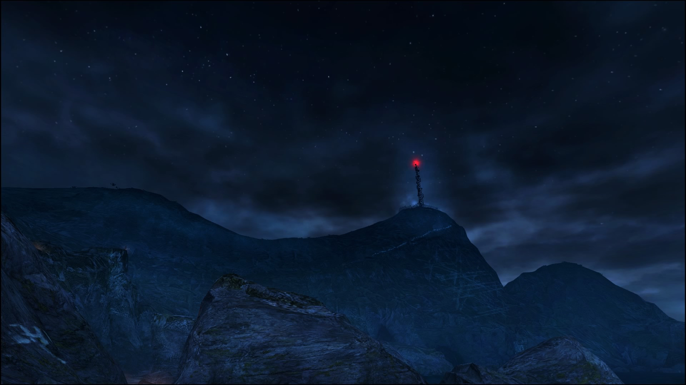

Dear Esther: Landmark Edition Full Narrative Review
Amikor először beléptem a **Dear Esther: Landmark Edition** világába, teljesen ledöbbentem, mennyi mindent lehet csinálni. Olyan volt, mintha kaptam volna egy hatalmas játszóteret, ahol autózhatok, repülhetek, vagy akár csak bolyonghatok a városban.
Az első dolog, amit kipróbáltam, persze az autólopás volt. Beugrottam egy sportkocsiba, padlóig nyomtam a gázt, és a motor hangjától kirázott a hideg. A város utcáin száguldani olyan volt, mintha egy versenyjátékban lennék, csak itt közben rendőrök üldöztek! Amikor bekapcsolták a szirénát, zakatolni kezdett a szívem, és próbáltam sikátorokkal, hirtelen kanyarokkal vagy hegyi utakra meneküléssel lerázni őket.
A legviccesebb az volt, amikor először repülőt szereztem. Fogalmam sem volt, hogyan kell vezetni, úgyhogy egyenesen az óceánba csapódtam vele! Persze nevettem rajta, és rögtön újra próbálkoztam. Ugyanez történt a helikopterrel is – ügyetlen voltam, de közben teljesen szabadnak éreztem magam.
A három főszereplő – Michael, Franklin és Trevor – mind teljesen más karakterek. Trevor őrültségein sokszor csak röhögni tudtam, Franklin autós üldözései izgalmasak voltak, Michael pedig igazi profi volt a rablásoknál. Olyan érzés volt, mintha három külön játékot kaptam volna egyben.
És persze ott volt a multiplayer is! A barátaimmal órákig tudtunk hülyéskedni: versenyeztünk, bankot raboltunk, vagy repülőkkel próbáltunk trükközni. Sokszor teljesen elrontottunk mindent, és végül csak nevetve menekültünk a rendőrök elől.
Néha azon gondolkodtam, milyen cheat-ek lennének még menőbbek. Például, ha egy gombnyomással előhívhatnám a leggyorsabb autót, vagy ha örökké tarthatna a repülés. Kár, hogy ezek csak a fejemben léteztek, de ettől lett még viccesebb az egész.
Összességében a **Dear Esther: Landmark Edition** számomra nemcsak egy játék, hanem egy hatalmas játszótér, ahol bármit kipróbálhatok, amit csak el tudok képzelni. És a legjobb, hogy mindig történik valami őrültség, ami miatt újra és újra vissza akarok térni.